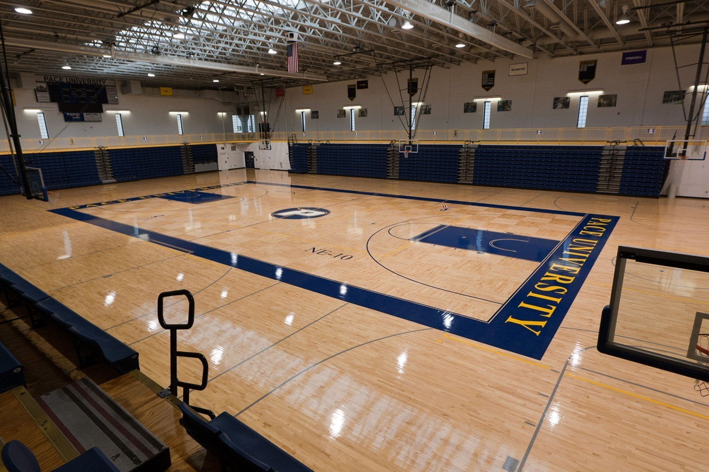

The following are the biggest universities worldwide for enrolled students:
1. Indira Gandhi National Open University, India
The Indira Gandhi National Open University (IGNOU) is a Central Open Learning
University in India’s capital city of New Delhi, located in the neighborhood
of Maidan Garhi. It was founded in 1985 with a funding of 20 million rupees
after the Indian Parliament passed the Indira Gandhi National Open University
Act, 1985, in her honor (IGNOU Act 1985).IGNOU, managed by the Indian government,
claims to be the biggest university in the world because it currently has more
than 4 million enrolled students. Open and distance education are the most common
means of instruction.
As part of its mission, Indira Gandhi National Open actively supports academic
inquiry, classroom instruction, community outreach, and faculty development.
In addition to opening its first regional headquarters in Kerala, the university
has future plans to open additional regional headquarters in other areas so that
it can serve an even larger student body.
About us
It also aims to encourage, coordinate and set standards for distance and open
education in India, and to strengthen the human resources of India through education.
Courses We Offer
Intermediate
The IGNOU TEE exams are conducted for the final or intermediate
year/ semester students who are enrolled under the UG, PG, Diploma
and Certificate programmes in Indira Gandhi National Open University
(IGNOU). The exams are held in two sessions- morning and evening
Degree
IGNOU degree is equivalent to a regular degree in terms of
its academic rigor and recognition by regulatory bodies such
as the UGC. However, since IGNOU offers distance learning programs,
ts degrees may be perceived differently by employers or other institutions.
Post Graduation
The University admits students to its Bachelors Degree Programme from both
formal and non-formal scheme. The non-formal stream consists of those students
who have not cleared 10+2 or equivalent exam. To take admission to IGNOU's degree
programme they have to pass its Bachelor's Preparatory Programme (BPP) first.
Our Global Campus
This is all campus side area
Our Facilities
World Class library
Reading frequently in libraries improves vocabulary and develops
reading and writing skills of the students. Students get access
to wide range of books and resources essential for reference,
knowledge,learning and entertainment.
Tasty and Health Food
A very Instagrammable cafe which is also a popular hangout
place in South Campus, Cafe Diaries has a warm ambience. The board
games & novels add up to the coolness of this cafe. Did we mention they
specialize in dishes overloaded with cheese? Try out the Chicken Club
Sandwich & Cheesy Fries for the ultimate cheese-full experience.
Advantages Of a large Classroom
Because core lessons take longer to complete, filler lessons that students
dislike rarely happen. In addition, students must learn independence and
self-motivation because teachers have less time to work one-on-one with
students.Peer to peer learning. Sometimes it's the people we study with
who can teach us the most. .

Largest Play Ground
Play improves the cognitive, physical, social, and emotional well-being
of children and young people. Through play, children learn about the
world and themselves. They also learn skills they need for study, work
and relationships such as: confidence.
What Our Student Says
Salman khan
Don’t do it. Do not join IGNOU. I’m a BCA student and here are
the reasons not to join IGNOU:-
Website User Interface is crap. Its very hard to search information
from the website.Considering you joined Open University you expect a
Good informative website.
I’m in BCA so it’s a BCA point, Study material of Mathematics and
Computer languages are poorly documented. Other Subject like English
etc are well documented btw.
Nisha Yadav
I have done BCA and MCA from IGNOU university and topped in my regional
centre. In my point of view, IGNOU has good study material and if we
study it well ( in detail) then we can easily get good marks. I used
to watch You Tube to understand concepts that I had difficulty in understanding
as concepts are sometimes not in much detail. I used to watch IIT channels on You
Tube. Sometimes, My doubts about some topics were not even cleared by the faculty
Jyoti Mushkan
I am pursuing MCA from IGNOU. Its really a head-ache now,
i am in last semester but frustrated from the process. None
of the faculty member from your regional center as well as
study centre will help you to answer yours queries. You have
to suppose everything at your own and act accordingly. If you
ask anything regarding your assignment submission as well as
lab courses, your study centre will simply say to ask it from
regional centre. And our great regional centres.
Our certificate & Online Program For 2023
Post Categroies
Business Analytics
21
Data Science
28
Machine Learning
15
Computer Science
34
Economices Honours
40
Commerce
34
Histroy
43
Arts
40
Our Certificate & Online Programs For 2023
In general, IGNOU degrees are recognized and valued by employers
in India, particularly in fields such as education, management,
social work, and public administration.Indira Gandhi National Open
University has come up with more than 75 courses at the certificate
level in various disciplines.
The courses are available in law,science, information technology,
humanities, performing arts, and many more fields.5 days agoIndia
is a country full of opportunities and there is no limit to what one
can achieve.
But with all these unlimited opportunities, comes the extensive competition
present in the country. Yes, it’s not a hidden fact that everyone in India
faces the problem of extensive competitiveness and while some healthy competition
needs to be there, there arises a need to stand out from the competition.
To excel in your professional career, it is useful to specialize in varied
areas and learn as many skills as possible and that’s where certification
courses come in handy.
Indira Gandhi National Open University (IGNOU) is one of India’s leading
open universities which offers various diploma and
certificate courses.
Read this blog further to know all about certificate courses in IGNOU.